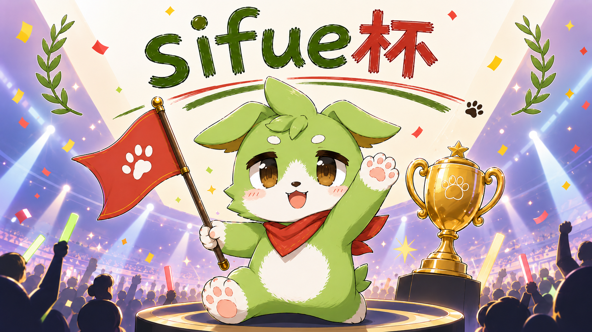
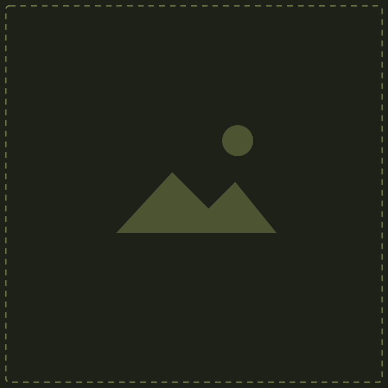

配信テンプレート・配置プレビュー
PPTXと共通の配置データによるHTMLプレビューです。Google Slidesへの変換結果そのものではありません。
sifue杯
STUDENT ESPORTS / UNOFFICIAL
00_TITLE
ZEN大学の非公認イベントです。
ALL TIMES JST / SIFUE CUP

SEPTEMBER / 2026
PLAY.
COMPETE.
CELEBRATE.
sifue杯 2026
[部門名] / [開催日] JST
大学の仲間が本気で遊ぶ、
年に一度のeスポーツフェス。
sifue杯
STUDENT ESPORTS / UNOFFICIAL
01_STREAM_STARTING
ZEN大学の非公認イベントです。
ALL TIMES JST / SIFUE CUP
STAND BY
STREAM
STARTING
まもなく配信開始
[19:00] JST
[部門名] / [開始前のご案内]
GET READY TO PLAY.
sifue杯
STUDENT ESPORTS / UNOFFICIAL
02_TODAY_SCHEDULE
ZEN大学の非公認イベントです。
ALL TIMES JST / SIFUE CUP
TODAY’S SCHEDULE
[部門名] / [開催日] JST
[19:00]
[オープニング]
[出演者・進行]
[19:10]
[第1試合]
[TEAM A vs TEAM B]
[20:00]
[第2試合]
[TEAM C vs TEAM D]
[21:00]
[決勝]
[対戦カード]
[22:00]
[表彰・エンディング]
[終了予定]
※ 時刻は記入例です。実際の進行に合わせて更新してください。
sifue杯
STUDENT ESPORTS / UNOFFICIAL
03_TEAM_VS
ZEN大学の非公認イベントです。
ALL TIMES JST / SIFUE CUP
HEAD TO HEAD
[部門名] / [試合番号] / [試合形式]

[ロゴ]
[TEAM A]
[チーム名]
[選手1] / [選手2] / [選手3]
[選手4] / [選手5]
[ロゴ]
[TEAM B]
[チーム名]
[選手1] / [選手2] / [選手3]
[選手4] / [選手5]
VS
sifue杯
STUDENT ESPORTS / UNOFFICIAL
04_PLAYER_INTRO
ZEN大学の非公認イベントです。
ALL TIMES JST / SIFUE CUP
PLAYER INTRODUCTION
[部門名] / [チーム名]
[選手写真]
[ROLE / POSITION]
[PLAYER NAME]
[選手名・ハンドルネーム]
得意分野：[使用キャラクター・戦術など]
ひとこと：[意気込み・紹介コメント]
sifue杯
STUDENT ESPORTS / UNOFFICIAL
05_MATCH_RULES
ZEN大学の非公認イベントです。
ALL TIMES JST / SIFUE CUP
MATCH RULES
[部門名] / 当日の試合ルール
01
試合形式
[試合形式を記入]
02
勝利条件
[勝利条件を記入]
03
使用設定
[使用設定を記入]
04
注意事項
[注意事項を記入]
運営連絡先：[チャンネル・担当者] / 詳細は当日の大会案内を確認
sifue杯
STUDENT ESPORTS / UNOFFICIAL
06_MAP_PICK
ZEN大学の非公認イベントです。
ALL TIMES JST / SIFUE CUP
MAP / STAGE PICK
[部門名] / [選択順・試合形式]
[マップ画像]
[MAP 1]
[PICK / BAN / DECIDER]
[選択チーム]
[マップ画像]
[MAP 2]
[PICK / BAN / DECIDER]
[選択チーム]
[マップ画像]
[MAP 3]
[PICK / BAN / DECIDER]
[選択チーム]
sifue杯
STUDENT ESPORTS / UNOFFICIAL
07_SCORE
ZEN大学の非公認イベントです。
ALL TIMES JST / SIFUE CUP
SCOREBOARD
[部門名] / [試合番号] / [試合形式]
[ロゴA]
[ロゴB]
[TEAM A]
[TEAM B]
0
—
0
[現在のマップ・ラウンド・進行状況]
sifue杯
STUDENT ESPORTS / UNOFFICIAL
08_MATCH_RESULT
ZEN大学の非公認イベントです。
ALL TIMES JST / SIFUE CUP
MATCH RESULT
[部門名] / [試合番号]
[勝利チームのロゴ]
WINNER
[WINNING TEAM]
[2] — [1]
vs [対戦チーム]
MVP：[選手名] / [勝利チームへのメッセージ]
sifue杯
STUDENT ESPORTS / UNOFFICIAL
09_BRACKET
ZEN大学の非公認イベントです。
ALL TIMES JST / SIFUE CUP
TOURNAMENT BRACKET
[部門名] / 4チーム・シングルエリミネーション記入用
SEMI FINALS
FINAL
CHAMPION
[TEAM A]
[TEAM B]
[0]
[0]
[TEAM C]
[TEAM D]
[0]
[0]
[SEMI FINAL 1 WINNER]
[SEMI FINAL 2 WINNER]
[0]
[0]
[WINNING TEAM]
※ 組み合わせ・スコア・勝ち上がりは手動で編集します。
sifue杯
STUDENT ESPORTS / UNOFFICIAL
10_BREAK
ZEN大学の非公認イベントです。
ALL TIMES JST / SIFUE CUP
INTERMISSION
TAKE
A BREAK.
ただいま休憩中
[20:30] JST
再開予定 / [次の試合]
WE WILL BE RIGHT BACK.
sifue杯
STUDENT ESPORTS / UNOFFICIAL
11_NEXT_MATCH
ZEN大学の非公認イベントです。
ALL TIMES JST / SIFUE CUP
NEXT MATCH
[部門名] / [試合番号] / [試合形式]
[ロゴ]
[TEAM A]
[チーム名]
[ロゴ]
[TEAM B]
[チーム名]
VS
START AT [20:00] JST
[次の試合の見どころ・ご案内]
sifue杯
STUDENT ESPORTS / UNOFFICIAL
12_STREAM_END
ZEN大学の非公認イベントです。
ALL TIMES JST / SIFUE CUP
SEE YOU NEXT TIME
THANK YOU
FOR
WATCHING.
ご視聴ありがとうございました
次回予定：[開催日・部門]
大会のお知らせ：ZEN大学Slack #sifue杯
PLAY. COMPETE. CELEBRATE.